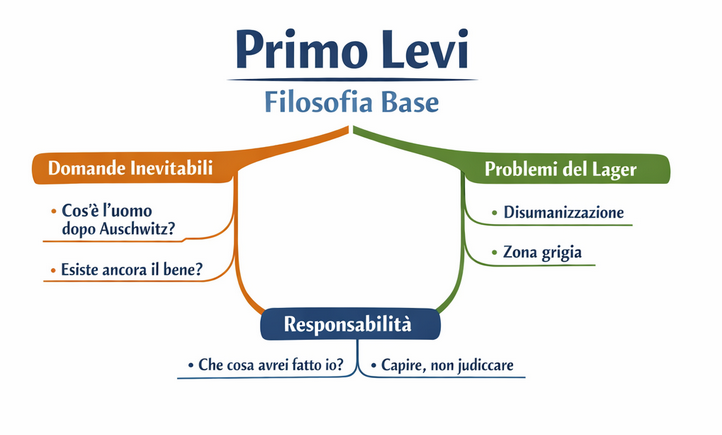
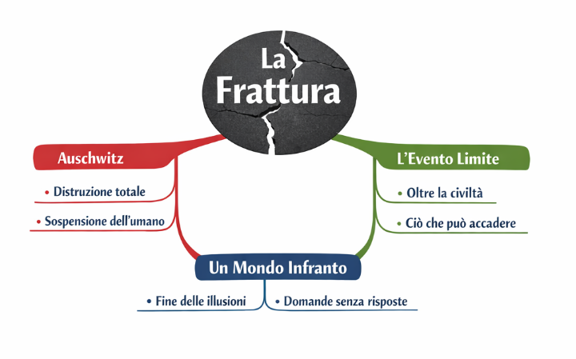
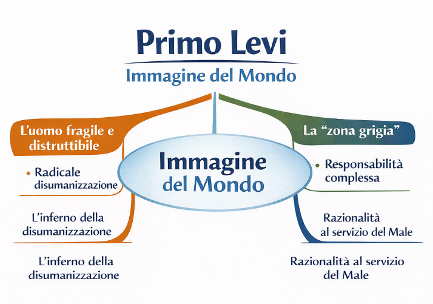
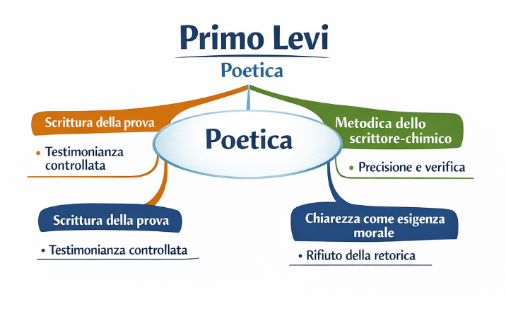

Schema
Primo Levi – Filosofia base
I nuclei di pensiero che sorreggono la sua opera: uomo, male, responsabilità, ragione, memoria.
Questa PWA presenta Levi come autore, testimone e pensatore. Ogni pagina è una lezione autonoma. Le mappe sono rinforzi visivi del testo. Le funzioni di evidenziazione e appunti trasformano la lettura in lavoro attivo.
Il modello prende l’ossatura tecnica che aveva funzionato e la rifà per Levi: meno decorazione, più ordine, più precisione, più lavoro sul testo.
Una pagina per ogni nucleo del percorso.
Origini, formazione scientifica, leggi razziali, Auschwitz, ritorno e lavoro di scrittore.
I nuclei di pensiero che sorreggono la sua opera: uomo, male, responsabilità, ragione, memoria.
Auschwitz come rottura storica e morale da cui nasce tutta la sua riflessione.
Civiltà, male organizzato, fragilità dell’uomo, responsabilità, vigilanza.
Una scrittura precisa, controllata, antiretorica: testimonianza e rigore.
I libri decisivi come tappe di un unico percorso: discesa, ritorno, giudizio, ampliamento.
Perché Levi resta necessario oggi: memoria, lucidità, responsabilità, vigilanza.
Ogni schema è pensato come rinforzo visivo del testo, non come decorazione.

I nuclei di pensiero che sorreggono la sua opera: uomo, male, responsabilità, ragione, memoria.

Auschwitz come rottura storica e morale da cui nasce tutta la sua riflessione.

Civiltà, male organizzato, fragilità dell’uomo, responsabilità, vigilanza.

Una scrittura precisa, controllata, antiretorica: testimonianza e rigore.
I libri decisivi come tappe di un unico percorso: discesa, ritorno, giudizio, ampliamento.

Perché Levi resta necessario oggi: memoria, lucidità, responsabilità, vigilanza.